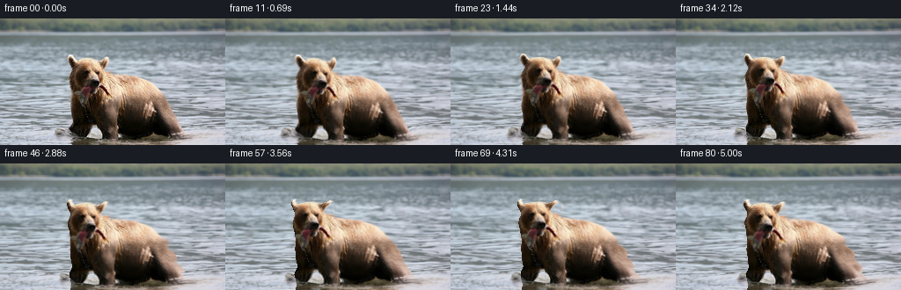
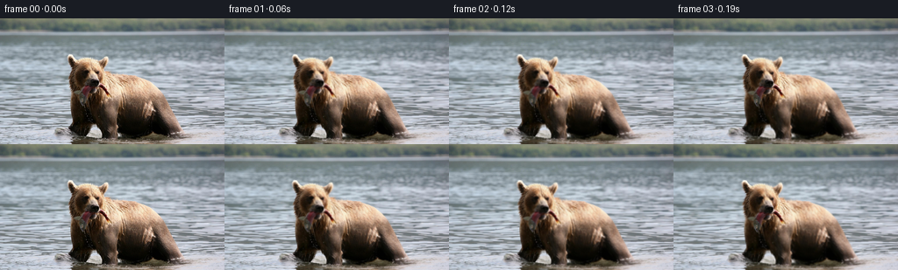

CODING AGENTS AS PIXEL WORLD MODELS
traex/GPT-6.1-Sol · 0872_s3
点击播放 · 原生 RGB 像素
逐轮保存的候选
回放视频、检查图与代码变化。
每份候选均可单独播放。实际图片检查记录在下方工具轨迹中。
候选 01播放与检查图
点击播放 · 原生 RGB 像素

展开代码变化
--- 上一保存版本
+++ 本次保存版本
@@ -0,0 +1,170 @@
+"""Animate the supplied photograph using continuous, hand-built pixel motion.
+
+No model or external image resources are used. The displacement map describes
+independent river flow, the bear's body, its articulated head and wet fish.
+"""
+from pathlib import Path
+import numpy as np
+from PIL import Image, ImageDraw, ImageFilter
+import artifact_io
+
+ROOT = Path(__file__).resolve().parent
+H,W=144,256
+Y,X=np.mgrid[:H,:W].astype(np.float32)
+
+
+def smooth(a,b,v):
+ q=np.clip((v-a)/(b-a),0,1)
+ return q*q*(3-2*q)
+
+
+def sample(im,x,y):
+ # Reflected boundaries retain river texture rather than stretching an edge.
+ x=(W-1)-np.abs((x%(2*(W-1)))-(W-1))
+ y=np.clip(y,0,H-1)
+ xi=np.floor(x).astype(np.int32); yi=np.floor(y).astype(np.int32)
+ xj=np.minimum(xi+1,W-1); yj=np.minimum(yi+1,H-1)
+ a=(x-xi)[...,None]; b=(y-yi)[...,None]
+ if im.ndim==2:
+ im=im[...,None]
+ return (im[yi,xi]*(1-a)*(1-b)+im[yi,xj]*a*(1-b)
+ +im[yj,xi]*(1-a)*b+im[yj,xj]*a*b)
+
+
+def silhouette():
+ canvas=Image.new('L',(W,H))
+ p=[(78,41),(82,41),(86,46),(90,46),(97,45),(108,45),
+ (115,47),(119,43),(122,43),(124,46),(124,51),(121,55),
+ (119,57),(119,59),(125,60),(127,62),(134,63),(145,64),
+ (156,66),(164,69),(171,72),(177,77),(182,82),(187,90),
+ (191,96),(195,104),(199,111),(203,119),(208,126),(212,131),
+ (219,135),(214,140),(205,144),(79,144),(81,137),(80,132),
+ (77,126),(79,122),(82,119),(82,116),(80,112),(80,102),
+ (79,97),(80,89),(80,83),(79,78),(78,72),(77,68),(78,64),
+ (80,61),(81,58),(81,56),(79,53),(78,51),(77,48),(76,45)]
+ ImageDraw.Draw(canvas).polygon(p,fill=255)
+ raw=np.asarray(canvas,dtype=np.float32)/255
+ # Attached water also moves very slightly at the silhouette, providing a
+ # continuous warp without revealing unobserved background behind the bear.
+ feather=np.asarray(canvas.filter(ImageFilter.GaussianBlur(2.5)),dtype=np.float32)/255
+ return raw,feather
+
+RAW,MASK=silhouette()
+
+
+def movement(x,y,t):
+ m=sample(MASK,x,y)[...,0]
+ depth=smooth(13,125,y)
+ water=smooth(10,20,y)
+ # Texture advection and several slowly travelling surface wave trains.
+ wx=water*(1.65*t*(.35+.65*depth)
+ +(.3+.65*depth)*(np.sin(y*.37+x*.024-1.7*t)-np.sin(y*.37+x*.024))
+ +.22*(np.sin(y*.85-2.5*t)-np.sin(y*.85)))
+ wy=water*((.20+.55*depth)*(np.sin(y*.20+x*.031-2.2*t)-np.sin(y*.20+x*.031))
+ +.19*depth*(np.sin(x*.085+y*.47-3.2*t)-np.sin(x*.085+y*.47)))
+
+ # A little forward wading, plus nonuniform weight shifts and respiration.
+ sx=-.75*t+1.35*np.sin(1.55*t)+.28*np.sin(3.1*t)
+ sy=.70*np.sin(2.75*t)+.45*np.sin(1.15*t)
+ scale=1+.004*t+.003*np.sin(2.1*t)
+ angle=.009*np.sin(1.55*t)
+ bx=sx+(scale-1)*(x-144)-angle*(y-124)
+ by=sy+(scale-1)*(y-124)+angle*(x-144)
+ breath=np.exp(-((x-148)/40)**2-((y-92)/33)**2)
+ bx+=.32*np.sin(2.0*t)*(x-141)/35*breath
+ by+=.28*np.sin(2.0*t)*breath
+
+ # Head: small attentive turn, nods, and chewing. Neck motion blends into
+ # the shoulders; the ears, eyes, nose, and fish retain source appearance.
+ head=(1-smooth(79,109,y))*(1-smooth(120,143,x))
+ theta=.050*np.sin(1.18*t)+.016*np.sin(2.7*t)
+ hx=1.5*np.sin(1.18*t)+(np.cos(theta)-1)*(x-101)-np.sin(theta)*(y-80)
+ hy=-1.9*(1-np.cos(1.18*t))*.5+.65*np.sin(2.6*t) \
+ +np.sin(theta)*(x-101)+(np.cos(theta)-1)*(y-80)
+ bx+=head*hx; by+=head*hy
+ jaw=np.exp(-((x-100)/17)**4-((y-85)/13)**4)
+ by+=.43*np.sin(5.1*t)*jaw
+ # Narrow grey fish hanging from the muzzle: tail flex rather than rubbery
+ # deformation of the entire head.
+ fish=np.exp(-((x-95)/4.8)**4-((y-92)/11)**4)
+ bx+=fish*smooth(82,100,y)*(.63*np.sin(8.4*t)+.24*np.sin(12.1*t))
+ by+=fish*.17*np.sin(8.4*t)
+ return wx*(1-m)+bx*m,wy*(1-m)+by*m
+
+
+def animate(image,t):
+ # Solve source coordinates of the smooth forward deformation. Fixed-point
+ # inversion avoids holes, duplicated outlines, or a compositing matte.
+ u=X.copy(); v=Y.copy()
+ for _ in range(5):
+ dx,dy=movement(u,v,t)
+ u=X-dx; v=Y-dy
+ out=sample(image,u,v)
+ visible=sample(RAW,u,v)[...,0]
+ river=(1-smooth(.03,.80,visible))*smooth(16,37,Y)
+ # Subpixel changing glints ride on the existing rippled water surface.
+ d=smooth(28,144,Y)
+ phase=.45*Y+.018*X+1.45*np.sin(.042*X)
+ glint=(np.sin(phase-2.6*t)-np.sin(phase))*.95*d
+ phase2=.92*Y-.045*X
+ glint+=(np.sin(phase2-3.3*t)-np.sin(phase2))*.35*d
+ out+=glint[...,None]*river[...,None]*np.array([.9,1.,1.1])
+
+ # Low-contrast, elliptical wake crests at the waterline. Their speed and
+ # spacing correspond to the bear's gentle alternating weight shifts.
+ motionx=-.75*t+1.35*np.sin(1.55*t)
+ for start,side in [(s,side) for s in (.20,1.35,2.50,3.65,4.80) for side in (-1,1)]:
+ age=t-start
+ if 0<age<1.75:
+ cx=(81 if side<0 else 200)+motionx
+ cy=130.0+.6*np.sin(2.75*t)
+ rx=7+22*age; ry=1.5+3.2*age
+ rho=np.sqrt(((X-cx)/rx)**2+((Y-cy)/ry)**2)
+ crest=np.exp(-((rho-1)*ry/.38)**2)
+ trough=np.exp(-((rho-1.20)*ry/.7)**2)
+ fade=np.sin(np.pi*age/1.75)**1.3
+ wake=(crest*3.2-trough*1.2)*fade*river
+ out+=wake[...,None]*np.array([.92,1.,1.05])
+
+ # A few tiny droplets falling from the wet catch, plus restrained splashes
+ # beside the immersed legs; all rasterized with soft subpixel coverage.
+ for k in range(12):
+ start=.26+k*.42
+ age=t-start
+ if 0<age<.46:
+ px=95+.5*np.sin(k*2.31)
+ py=98+12*age+42*age*age
+ dx,dy=movement(np.array([[px]],np.float32),np.array([[py]],np.float32),t)
+ px+=float(dx[0,0]); py+=float(dy[0,0])
+ dist=((X-px)/.40)**2+((Y-py)/(.55+.55*age))**2
+ alpha=np.exp(-dist*1.8)*.31*np.sin(np.pi*age/.46)
+ out=out*(1-alpha[...,None])+np.array([195,196,183])*alpha[...,None]
+ for step in range(5):
+ start=.42+step*1.10
+ for side in (-1,1):
+ for k in range(4):
+ age=t-start-k*.031
+ if 0<age<.46:
+ px=(80 if side<0 else 203)+motionx+side*(1.5+6*age+k*.45)
+ py=131-(16+2*k)*age+49*age*age
+ dist=((X-px)/(.35+.03*k))**2+((Y-py)/.55)**2
+ alpha=np.exp(-dist*1.7)*.22*np.sin(np.pi*age/.46)*river
+ out=out*(1-alpha[...,None])+np.array([214,218,222])*alpha[...,None]
+ return np.clip(np.rint(out),0,255).astype(np.uint8)
+
+
+def main():
+ original=np.asarray(Image.open(ROOT/'first_frame.png').convert('RGB'),dtype=np.uint8)
+ frames=np.empty((81,H,W,3),dtype=np.uint8)
+ frames[0]=original
+ for i in range(1,81):
+ frames[i]=animate(original.astype(np.float32),i/16)
+ # Store a local intermediate candidate for reproducible numeric inspection.
+ np.savez_compressed(ROOT/'candidate_rgb.npz',frames=frames)
+ artifact_io.save(frames,ROOT)
+ print('Saved',frames.shape,frames.dtype)
+ print('First-frame identical:',bool(np.array_equal(frames[0],original)))
+ print('Adjacent mean absolute RGB change:',np.abs(np.diff(frames.astype(np.float32),axis=0)).mean())
+
+if __name__=='__main__':
+ main()
候选 02播放与检查图
点击播放 · 原生 RGB 像素

展开代码变化
代码未变化；重新保存了产物。
候选 03播放与检查图
点击播放 · 原生 RGB 像素


展开代码变化
--- 上一保存版本
+++ 本次保存版本
@@ -46,7 +46,7 @@
raw=np.asarray(canvas,dtype=np.float32)/255
# Attached water also moves very slightly at the silhouette, providing a
# continuous warp without revealing unobserved background behind the bear.
- feather=np.asarray(canvas.filter(ImageFilter.GaussianBlur(2.5)),dtype=np.float32)/255
+ feather=np.asarray(canvas.filter(ImageFilter.MaxFilter(21)).filter(ImageFilter.GaussianBlur(7.0)),dtype=np.float32)/255
return raw,feather
RAW,MASK=silhouette()
@@ -96,7 +96,7 @@
# Solve source coordinates of the smooth forward deformation. Fixed-point
# inversion avoids holes, duplicated outlines, or a compositing matte.
u=X.copy(); v=Y.copy()
- for _ in range(5):
+ for _ in range(9):
dx,dy=movement(u,v,t)
u=X-dx; v=Y-dy
out=sample(image,u,v)
候选 04播放与检查图
可观测工具轨迹
实际执行的命令与返回图片。
命令 1exit 0
/bin/bash -lc 'ls -la && cat prompt.txt && cat GENERATION_RULES.md'
命令 2exit 0
/bin/bash -lc "cat task_spec.json && cat artifact_io.py && python - <<'PY'
from PIL import Image
import numpy as np
im=np.array(Image.open('first_frame.png').convert('RGB'))
print('shape',im.shape)
for y in range(0,144,8):
print(y,[(x,tuple(im[y:y+8,x:x+16].mean((0,1)).astype(int))) for x in range(0,256,16)])
PY"命令 3exit 0
/bin/bash -lc "python - <<'PY'
import numpy as np
from PIL import Image
im=np.array(Image.open('first_frame.png')).astype(float)
# 2x2 average and classify pixels
im=np.array(Image.open('first_frame.png').resize((128,72),Image.Resampling.BOX)).astype(float)
for y in range(72):
s=''
for x in range(128):
r,g,b=im[y,x]; v=(r+g+b)/3
if r-b>8 and r-g>3: s+='@' if v<40 else '#' if v<75 else 'O' if v<110 else 'o' if v<150 else '+' if v<190 else '*'
elif b-r>6: s+='.' if v<140 else '-' if v<180 else '~' if v<210 else '='
else: s+='X' if v<40 else 'x' if v<80 else ':' if v<130 else ',' if v<180 else 's'
print(f'{y*2:3d} {s}')
PY"命令 4exit 0
/bin/bash -lc "python - <<'PY'
from PIL import Image
import numpy as np
I=np.array(Image.open('first_frame.png')).astype(int)
for y in range(40,103):
s=''
for x in range(72,133):
r,g,b=I[y,x]; v=(r+g+b)/3
if b>r+3: c=' '
elif r-g>5 and r-b>8: c='0' if v<25 else '1' if v<50 else '2' if v<80 else '3' if v<110 else '4' if v<140 else '5' if v<170 else '6' if v<200 else '7' if v<230 else '8'
else: c='X' if v<25 else 'D' if v<50 else 'd' if v<80 else 'o' if v<110 else 's' if v<140 else '=' if v<170 else '+' if v<200 else '*' if v<230 else 'W'
s+=c
print(f'{y:3d} {s}')
print('Neutral/water colored internal points')
for y in range(76,103,2):
print(y,[(x,tuple(I[y,x])) for x in range(80,114,2)])
PY"命令 5exit 0
/bin/bash -lc "python - <<'PY'
import numpy as np
from PIL import Image
I=np.array(Image.open('first_frame.png')).astype(float)
r,g,b=I.transpose(2,0,1)
m=(r-b>5)&(r-g>2)
for y in range(36,144):
xs=np.where(m[y] & (np.arange(256)>66) & (np.arange(256)<217))[0]
# groups >=2
gr=np.split(xs,np.where(np.diff(xs)>1)[0]+1)
gr=[(a[0],a[-1]) for a in gr if len(a)>=2]
print(y,gr)
PY"命令 6exit 0
/bin/bash -lc "python - <<'PY' import importlib.util for m in ['numpy','scipy','PIL','cv2','imageio','imageio_ffmpeg']: print(m, bool(importlib.util.find_spec(m))) PY"
命令 7exit 0
/bin/bash -lc "python - <<'PY'
from PIL import Image
import numpy as np
I=np.array(Image.open('first_frame.png')).astype(int)
for y in [40,41,42,43,44,45,46,47,48,56,60,63,64,82,118,120,125,130,135]:
print(y,[(x,tuple(I[y,x])) for x in (75,76,77,78,79,80,81,82,83,84,87,93,98,104,110,116,122,126,132,139,150,170,190,199,205,210,216)])
PY"命令 8exit 0
/bin/bash -lc "cat > generate.py <<'PY'
\"\"\"Animate the supplied photograph using continuous, hand-built pixel motion.
No model or external image resources are used. The displacement map describes
independent river flow, the bear's body, its articulated head and wet fish.
\"\"\"
from pathlib import Path
import numpy as np
from PIL import Image, ImageDraw, ImageFilter
import artifact_io
ROOT = Path(__file__).resolve().parent
H,W=144,256
Y,X=np.mgrid[:H,:W].astype(np.float32)
def smooth(a,b,v):
q=np.clip((v-a)/(b-a),0,1)
return q*q*(3-2*q)
def sample(im,x,y):
# Reflected boundaries retain river texture rather than stretching an edge.
x=(W-1)-np.abs((x%(2*(W-1)))-(W-1))
y=np.clip(y,0,H-1)
xi=np.floor(x).astype(np.int32); yi=np.floor(y).astype(np.int32)
xj=np.minimum(xi+1,W-1); yj=np.minimum(yi+1,H-1)
a=(x-xi)[...,None]; b=(y-yi)[...,None]
if im.ndim==2:
im=im[...,None]
return (im[yi,xi]*(1-a)*(1-b)+im[yi,xj]*a*(1-b)
+im[yj,xi]*(1-a)*b+im[yj,xj]*a*b)
def silhouette():
canvas=Image.new('L',(W,H))
p=[(78,41),(82,41),(86,46),(90,46),(97,45),(108,45),
(115,47),(119,43),(122,43),(124,46),(124,51),(121,55),
(119,57),(119,59),(125,60),(127,62),(134,63),(145,64),
(156,66),(164,69),(171,72),(177,77),(182,82),(187,90),
(191,96),(195,104),(199,111),(203,119),(208,126),(212,131),
(219,135),(214,140),(205,144),(79,144),(81,137),(80,132),
(77,126),(79,122),(82,119),(82,116),(80,112),(80,102),
(79,97),(80,89),(80,83),(79,78),(78,72),(77,68),(78,64),
(80,61),(81,58),(81,56),(79,53),(78,51),(77,48),(76,45)]
ImageDraw.Draw(canvas).polygon(p,fill=255)
raw=np.asarray(canvas,dtype=np.float32)/255
# Attached water also moves very slightly at the silhouette, providing a
# continuous warp without revealing unobserved background behind the bear.
feather=np.asarray(canvas.filter(ImageFilter.GaussianBlur(2.5)),dtype=np.float32)/255
return raw,feather
RAW,MASK=silhouette()
def movement(x,y,t):
m=sample(MASK,x,y)[...,0]
depth=smooth(13,125,y)
water=smooth(10,20,y)
# Texture advection and several slowly travelling surface wave trains.
wx=water*(1.65*t*(.35+.65*depth)
+(.3+.65*depth)*(np.sin(y*.37+x*.024-1.7*t)-np.sin(y*.37+x*.024))
+.22*(np.sin(y*.85-2.5*t)-np.sin(y*.85)))
wy=water*((.20+.55*depth)*(np.sin(y*.20+x*.031-2.2*t)-np.sin(y*.20+x*.031))
+.19*depth*(np.sin(x*.085+y*.47-3.2*t)-np.sin(x*.085+y*.47)))
# A little forward wading, plus nonuniform weight shifts and respiration.
sx=-.75*t+1.35*np.sin(1.55*t)+.28*np.sin(3.1*t)
sy=.70*np.sin(2.75*t)+.45*np.sin(1.15*t)
scale=1+.004*t+.003*np.sin(2.1*t)
angle=.009*np.sin(1.55*t)
bx=sx+(scale-1)*(x-144)-angle*(y-124)
by=sy+(scale-1)*(y-124)+angle*(x-144)
breath=np.exp(-((x-148)/40)**2-((y-92)/33)**2)
bx+=.32*np.sin(2.0*t)*(x-141)/35*breath
by+=.28*np.sin(2.0*t)*breath
# Head: small attentive turn, nods, and chewing. Neck motion blends into
# the shoulders; the ears, eyes, nose, and fish retain source appearance.
head=(1-smooth(79,109,y))*(1-smooth(120,143,x))
theta=.050*np.sin(1.18*t)+.016*np.sin(2.7*t)
hx=1.5*np.sin(1.18*t)+(np.cos(theta)-1)*(x-101)-np.sin(theta)*(y-80)
hy=-1.9*(1-np.cos(1.18*t))*.5+.65*np.sin(2.6*t) \\
+np.sin(theta)*(x-101)+(np.cos(theta)-1)*(y-80)
bx+=head*hx; by+=head*hy
jaw=np.exp(-((x-100)/17)**4-((y-85)/13)**4)
by+=.43*np.sin(5.1*t)*jaw
# Narrow grey fish hanging from the muzzle: tail flex rather than rubbery
# deformation of the entire head.
fish=np.exp(-((x-95)/4.8)**4-((y-92)/11)**4)
bx+=fish*smooth(82,100,y)*(.63*np.sin(8.4*t)+.24*np.sin(12.1*t))
by+=fish*.17*np.sin(8.4*t)
return wx*(1-m)+bx*m,wy*(1-m)+by*m
def animate(image,t):
# Solve source coordinates of the smooth forward deformation. Fixed-point
# inversion avoids holes, duplicated outlines, or a compositing matte.
u=X.copy(); v=Y.copy()
for _ in range(5):
dx,dy=movement(u,v,t)
u=X-dx; v=Y-dy
out=sample(image,u,v)
visible=sample(RAW,u,v)[...,0]
river=(1-smooth(.03,.80,visible))*smooth(16,37,Y)
# Subpixel changing glints ride on the existing rippled water surface.
d=smooth(28,144,Y)
phase=.45*Y+.018*X+1.45*np.sin(.042*X)
glint=(np.sin(phase-2.6*t)-np.sin(phase))*.95*d
phase2=.92*Y-.045*X
glint+=(np.sin(phase2-3.3*t)-np.sin(phase2))*.35*d
out+=glint[...,None]*river[...,None]*np.array([.9,1.,1.1])
# Low-contrast, elliptical wake crests at the waterline. Their speed and
# spacing correspond to the bear's gentle alternating weight shifts.
motionx=-.75*t+1.35*np.sin(1.55*t)
for start,side in [(s,side) for s in (.20,1.35,2.50,3.65,4.80) for side in (-1,1)]:
age=t-start
if 0<age<1.75:
cx=(81 if side<0 else 200)+motionx
cy=130.0+.6*np.sin(2.75*t)
rx=7+22*age; ry=1.5+3.2*age
rho=np.sqrt(((X-cx)/rx)**2+((Y-cy)/ry)**2)
crest=np.exp(-((rho-1)*ry/.38)**2)
trough=np.exp(-((rho-1.20)*ry/.7)**2)
fade=np.sin(np.pi*age/1.75)**1.3
wake=(crest*3.2-trough*1.2)*fade*river
out+=wake[...,None]*np.array([.92,1.,1.05])
# A few tiny droplets falling from the wet catch, plus restrained splashes
# beside the immersed legs; all rasterized with soft subpixel coverage.
for k in range(12):
start=.26+k*.42
age=t-start
if 0<age<.46:
px=95+.5*np.sin(k*2.31)
py=98+12*age+42*age*age
dx,dy=movement(np.array([[px]],np.float32),np.array([[py]],np.float32),t)
px+=float(dx[0,0]); py+=float(dy[0,0])
dist=((X-px)/.40)**2+((Y-py)/(.55+.55*age))**2
alpha=np.exp(-dist*1.8)*.31*np.sin(np.pi*age/.46)
out=out*(1-alpha[...,None])+np.array([195,196,183])*alpha[...,None]
for step in range(5):
start=.42+step*1.10
for side in (-1,1):
for k in range(4):
age=t-start-k*.031
if 0<age<.46:
px=(80 if side<0 else 203)+motionx+side*(1.5+6*age+k*.45)
py=131-(16+2*k)*age+49*age*age
dist=((X-px)/(.35+.03*k))**2+((Y-py)/.55)**2
alpha=np.exp(-dist*1.7)*.22*np.sin(np.pi*age/.46)*river
out=out*(1-alpha[...,None])+np.array([214,218,222])*alpha[...,None]
return np.clip(np.rint(out),0,255).astype(np.uint8)
def main():
original=np.asarray(Image.open(ROOT/'first_frame.png').convert('RGB'),dtype=np.uint8)
frames=np.empty((81,H,W,3),dtype=np.uint8)
frames[0]=original
for i in range(1,81):
frames[i]=animate(original.astype(np.float32),i/16)
# Store a local intermediate candidate for reproducible numeric inspection.
np.savez_compressed(ROOT/'candidate_rgb.npz',frames=frames)
artifact_io.save(frames,ROOT)
print('Saved',frames.shape,frames.dtype)
print('First-frame identical:',bool(np.array_equal(frames[0],original)))
print('Adjacent mean absolute RGB change:',np.abs(np.diff(frames.astype(np.float32),axis=0)).mean())
if __name__=='__main__':
main()
PY
python generate.py"命令 9exit 0
/bin/bash -lc "python - <<'PY'
import generate as g
import numpy as np
from PIL import Image
F=np.load('candidate_rgb.npz')['frames']
print('Shape/dtype',F.shape,F.dtype,'Range',F.min(),F.max())
print('Motion by region:')
for label,reg in [('background',np.s_[:15,:,:]),('head',np.s_[45:78,80:120,:]),('body',np.s_[80:115,125:176,:]),('water',np.s_[25:125,:65,:])]:
f=F[:,reg[0],reg[1],reg[2]].astype(float)
print(label,'step',np.abs(np.diff(f,axis=0)).mean(),'final',np.abs(f[-1]-f[0]).mean())
for t in [1,2,3,4,5]:
dx,dy=g.movement(g.X,g.Y,t)
dxx=np.gradient(dx,axis=1); dxy=np.gradient(dx,axis=0)
dyx=np.gradient(dy,axis=1); dyy=np.gradient(dy,axis=0)
det=(1+dxx)*(1+dyy)-dxy*dyx
print('time',t,'min jac',det.min(),'fold count',(det<0).sum(),'large gradient',np.max(np.abs(dxx)))
# numeric ASCII late frame, boundary check
I=np.array(Image.fromarray(F[-1]).resize((128,72),Image.Resampling.BOX)).astype(float)
for y in range(19,70):
s=''
for x in range(33,114):
r,gg,b=I[y,x]; v=(r+gg+b)/3
if r-b>8 and r-gg>3: s+='@' if v<40 else '#' if v<75 else 'O' if v<110 else 'o' if v<150 else '+' if v<190 else '*'
elif b-r>6: s+='.' if v<140 else '-' if v<180 else '~' if v<210 else '='
else: s+='X' if v<40 else 'x' if v<80 else ':' if v<130 else ',' if v<180 else 's'
print(y*2,s)
PY"命令 10exit 0
/bin/bash -lc "python - <<'PY'
p='generate.py'
s=open(p).read().replace('canvas.filter(ImageFilter.GaussianBlur(2.5))','canvas.filter(ImageFilter.MaxFilter(21)).filter(ImageFilter.GaussianBlur(7.0))')
open(p,'w').write(s)
PY
python - <<'PY'
import generate as g
import numpy as np
for t in [1,2,3,4,5]:
dx,dy=g.movement(g.X,g.Y,t)
dxx=np.gradient(dx,axis=1); dxy=np.gradient(dx,axis=0)
dyx=np.gradient(dy,axis=1); dyy=np.gradient(dy,axis=0)
det=(1+dxx)*(1+dyy)-dxy*dyx
print(t,det.min(),(det<0).sum(), np.quantile(det,[.01,.5,.99]))
PY"命令 11exit 0
/bin/bash -lc "python - <<'PY'
p='generate.py'
s=open(p).read().replace('for _ in range(5):','for _ in range(9):')
open(p,'w').write(s)
PY
python generate.py
python - <<'PY'
import numpy as np
from PIL import Image
from pathlib import Path
import generate as g
F=np.load('candidate_rgb.npz')['frames']
P=np.load('pixels.npz')['pixels']
I=np.array(Image.open('first_frame.png').convert('RGB'))
assert F.shape==(81,144,256,3) and F.dtype==np.uint8
assert np.array_equal(F[0],I)
r=((P>>16)&255).transpose(2,0,1)
green=((P>>8)&255).transpose(2,0,1)
b=(P&255).transpose(2,0,1)
assert np.array_equal(F,np.stack([r,green,b],axis=-1).astype(np.uint8))
assert len(list(Path('frames').glob('*.png')))==81
min_jac=100
for t in np.arange(1,81)/16:
dx,dy=g.movement(g.X,g.Y,t)
det=(1+np.gradient(dx,axis=1))*(1+np.gradient(dy,axis=0))-np.gradient(dx,axis=0)*np.gradient(dy,axis=1)
min_jac=min(min_jac,float(det.min()))
assert min_jac>0
print('All 81 frames verified; no displacement folds. Minimum Jacobian:',round(min_jac,4))
print('Artifacts:',*[str(p) for p in ('pixels.npz','index.html','generate.py')])
PY"保存候选 4 份；完成命令 11 次；可验证图片返回 0 张。原始 API 响应与完整日志保留在本地。